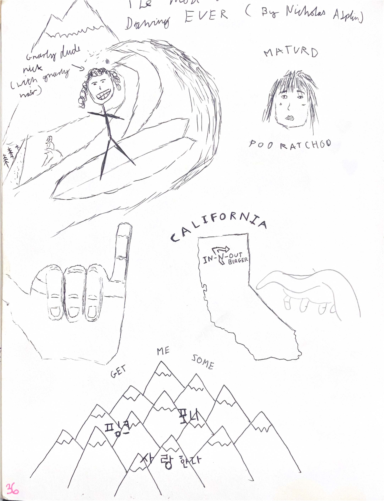

2018
I drew the two characters in the bottom, my cousin did the 'graffiti art' on the wall behind them.
This was my contribution to an old art meme that floated around instagram.
I painted these while I was visiting my aunt and uncle in California.The cat was my Aunt's, and the building at the bottom is the Griffith Observatory.
This is an old comic I made about some characters of mine.
Some early attempts at figure drawing.
Hands and dip pen practice.

I moved to a different country at the end of 2018, and before I left some of my friends drew in my sketchbook.
Technically this painting was done in 2024, but only because I found an extra blank page in this old sketchbook and took it with me to Central Park.